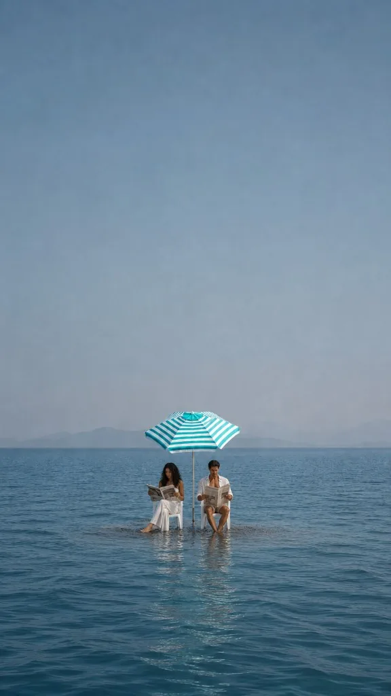
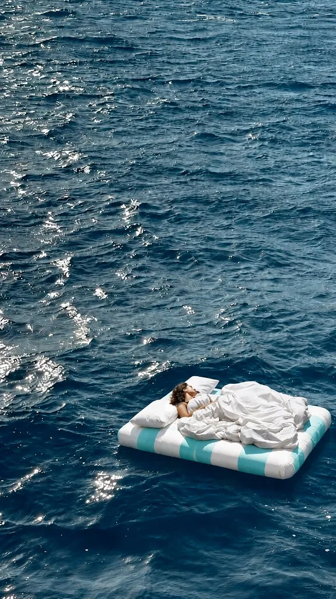
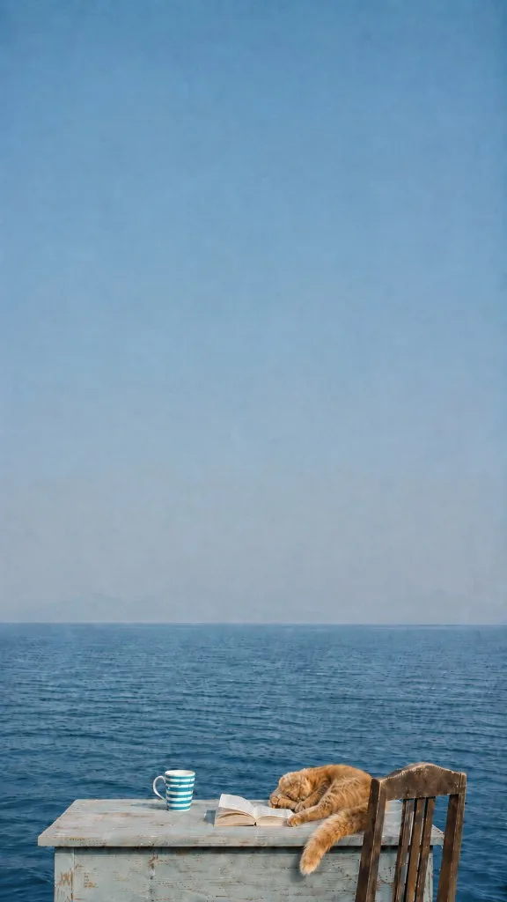

Image / concept campaign
Nammos
A self-directed campaign for Nammos, whose umbrellas are the most recognisable thing about it. So the campaign keeps the stripe and removes everything else: no club, no crowd, no shoreline. One striped object on open water, and the brand still arrives.
- Year
- 2026
- Kind
- Image
- Role
- Concept, art direction, generative production
- Frames
- 9:16 reels, single-object stills
The premise
The stripe is the whole logo.
Nammos is sold everywhere as a room full of people. That is the one thing a spec ad cannot borrow, and the one thing the club does not actually need: the turquoise-and-white stripe is doing the identifying long before a single face is legible. Each frame here is a test of that, with the object placed far out in flat water where nothing else can help it.



Open the work
Primary sources.
Structure
Three reels, one stripe.
The set runs from the object everyone recognises to the object nobody would notice, so the test gets harder rather than more flattering as it goes.
-
Reel I
The umbrella
The canopy planted in open water with the beach deleted. Two guests, dressed for the club, reading as though the sea were a terrace.
-
Reel II
The sunbed
A single striped mattress adrift, seen from above. The bed that is only ever photographed in a row of eighty, alone.
-
Reel III
The mug
The stripe reduced to a piece of crockery on a peeling table, holding the frame with a sleeping cat and no service in sight.
How it was built
Pipeline.
Made with no brief and no client, which is why the constraint could be this severe: every frame had to be readable as Nammos with the club withheld.
The stripe pinned first as a fixed width and a fixed turquoise, so the umbrella, the mattress and the mug are all carrying the same swatch.
Coastline, architecture, staff and crowd cut from every composition, leaving one branded object and water.
The horizon held at the same height across the set, so three unrelated scenes read as one location.
Sea and sky desaturated toward haze so the turquoise is the only saturated colour left in frame.
Each still animated to a 9:16 reel with the camera almost static, because the joke only lands if the scene is calm enough to be believed.